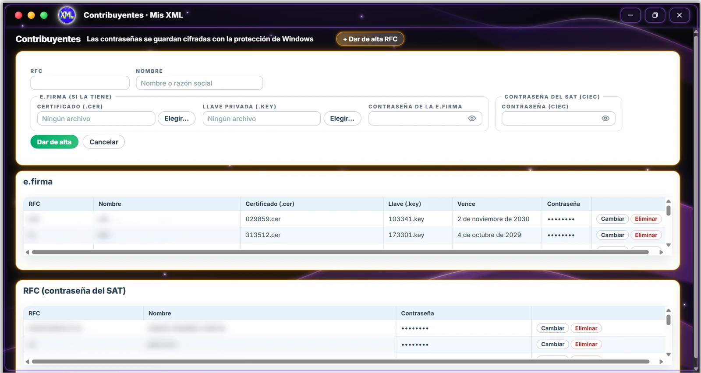

Paso 1 · Contribuyentes
Da de alta a tus clientes una sola vez
Aquí empiezas: registra cada RFC con su nombre, su e.firma (certificado .cer y llave .key) y su contraseña, o solo la CIEC, o ambas.
- Todo lo sensible se cifra automáticamente con la protección de Windows.
- Ves la fecha de vencimiento de cada e.firma.
- Después ya no tienes que volver a escribir RFC ni contraseñas.